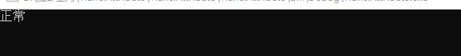

# Remark 特性的应用场景
# 场景一：用户状态的枚举值，定义的是英文的字段，需要输出中文含义。枚举定义如下：
public enum UserState | |
{ | |
/// <summary> | |
/// 正常 | |
/// </summary> | |
Normal = 0, | |
/// <summary> | |
/// 冻结 | |
/// </summary> | |
Frozen = 1, | |
/// <summary> | |
/// 删除 | |
/// </summary> | |
Deleted = 2 | |
} |
# 普通做法：根据枚举值进行判断，然后输出中文含义：
UserState userState = UserState.Normal; | |
switch (userState) | |
{ | |
case UserState.Deleted: | |
Console.WriteLine("删除"); | |
break; | |
case UserState.Normal: | |
Console.WriteLine("正常"); | |
break; | |
case UserState.Frozen: | |
Console.WriteLine("冻结"); | |
break; | |
} |
# 这种写法违反开闭原则，不利于以后的扩展，下面使用特性实现
# 先定义 Remark 特性：
/// <summary> | |
/// Remark 特性 | |
/// </summary> | |
public class RemarkAttribute : Attribute | |
{ | |
private string _Remark; | |
/// <summary> | |
/// 有参构造函数 | |
/// </summary> | |
/// <param name="remark"></param> | |
public RemarkAttribute(string remark) | |
{ | |
_Remark = remark; | |
} | |
/// <summary> | |
/// 获取 Remark | |
/// </summary> | |
/// <returns></returns> | |
public string GetRemark() | |
{ | |
return _Remark; | |
} | |
} |
# UserState 枚举修改如下：
public enum UserState | |
{ | |
/// <summary> | |
/// 正常 | |
/// </summary> | |
[Remark("正常")] | |
Normal = 0, | |
/// <summary> | |
/// 冻结 | |
/// </summary> | |
[Remark("冻结")] | |
Frozen = 1, | |
/// <summary> | |
/// 删除 | |
/// </summary> | |
[Remark("删除")] | |
Deleted = 2 | |
} |
# 写一个扩展方法，对 Enum 类型进行扩展：
public static class RemarkExtension | |
{ | |
/// <summary> | |
/// Enum 的扩展方法 | |
/// </summary> | |
/// <param name="value"></param> | |
/// <returns></returns> | |
public static string GetRemark(this Enum value) | |
{ | |
// 获取类型 | |
Type type = value.GetType(); | |
// 获取字段 | |
FieldInfo fieId = type.GetField(value.ToString()); | |
// 判断字段上面是否定义了 ReamrkAttribute 特性 | |
if (fieId.IsDefined(typeof(RemarkAttribute))) | |
{ | |
// 创建实例 | |
RemarkAttribute attribute = (RemarkAttribute)fieId.GetCustomAttribute(typeof(RemarkAttribute)); | |
return attribute.GetRemark(); | |
} | |
else | |
{ | |
return value.ToString(); | |
} | |
} | |
} |
# 最后 Main () 方法里面调用
static void Main(string[] args) | |
{ | |
UserState userState = UserState.Normal; | |
Console.WriteLine(userState.GetRemark()); | |
Console.ReadKey(); | |
} |
# 输出结果
